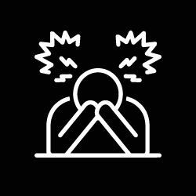
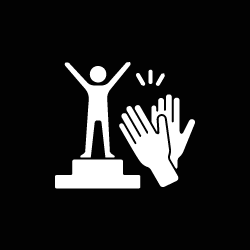

Textos
Apología Gastronómica
Autor: Tomas Pietragallo
Como una casita de cartas los macedonia cabeza de fósforo
Van alistándose de a uno para crear una pirámide
La pirámide que estos sujetos pueden lograr, rompe con el paradigma l√≠neal de la distribuci√≥n de la riqueza En la cima Patricia estrella no es yeta, es cheta y chueca Entonces ella balancea entre sus extremidades yendo de la cama al living, mientras luce unas flail weapon Sus zapatos se derriten como las velas en los antiguos candelabros as√≠ posa cera caliente sobre la cabeza llena de platos de los mozos más inestables del condado Ellos gente de tres dedos y sancos prodigiosos, son encargados a trav√©s de la historia de generar un v√≠nculo entre el comenzal y los abarrotados cocineros En una siguedilla el equipo sabe mimetizarse tan bien que; Uno estará con las piernas entre abiertas Dos abiertas totalmente Y el tres cerradas As√≠ podrán mantener a todos sus comensales contentos En la última l√≠nea y haciendo malabares se encuentran: Pimienta y sal junto con agua y harina, como todo ser que elabora comida, estos dos deben liderar el equilibrio entre las agujas de reloj debajo de su suela, el fuego sobre sus cabezas y una fina l√≠nea a mantener recta en sus manos. Como artesanos chinos, son los encargados de que Patricia se babee y as√≠ su saliva alcance la cabeza prendida fuego de los mozos, as√≠ apagando su incendio antes de que el perro queme sus ideas. As√≠ funciona la torre de cartas üÉè que desarrolla dentro de una cocina la artista üë©‚Äçüé® @catalinaytuvoz
Van alistándose de a uno para crear una pirámide
La pirámide que estos sujetos pueden lograr, rompe con el paradigma l√≠neal de la distribuci√≥n de la riqueza En la cima Patricia estrella no es yeta, es cheta y chueca Entonces ella balancea entre sus extremidades yendo de la cama al living, mientras luce unas flail weapon Sus zapatos se derriten como las velas en los antiguos candelabros as√≠ posa cera caliente sobre la cabeza llena de platos de los mozos más inestables del condado Ellos gente de tres dedos y sancos prodigiosos, son encargados a trav√©s de la historia de generar un v√≠nculo entre el comenzal y los abarrotados cocineros En una siguedilla el equipo sabe mimetizarse tan bien que; Uno estará con las piernas entre abiertas Dos abiertas totalmente Y el tres cerradas As√≠ podrán mantener a todos sus comensales contentos En la última l√≠nea y haciendo malabares se encuentran: Pimienta y sal junto con agua y harina, como todo ser que elabora comida, estos dos deben liderar el equilibrio entre las agujas de reloj debajo de su suela, el fuego sobre sus cabezas y una fina l√≠nea a mantener recta en sus manos. Como artesanos chinos, son los encargados de que Patricia se babee y as√≠ su saliva alcance la cabeza prendida fuego de los mozos, as√≠ apagando su incendio antes de que el perro queme sus ideas. As√≠ funciona la torre de cartas üÉè que desarrolla dentro de una cocina la artista üë©‚Äçüé® @catalinaytuvoz
He de ser faro
Autor: Glen
He de ser faro:
Un faro es una torre alta con luz,
que sirve de guía a los navegantes.
He de brillar e irradiar la luz que te oriente, que te de confianza. He de ayudarte a ver el camino cuando te encuentres perdido en el misterioso oleaje de la vida, en las oscuras y cálidas noches de silencio frío... He de mantenerme en tierra firme He de confiar en que algún día, la marea te traerá a mi puerto, y subirás a mi torre y arderemos en luz como alguna vez lo hicimos.
Un faro es una torre alta con luz,
que sirve de guía a los navegantes.
He de brillar e irradiar la luz que te oriente, que te de confianza. He de ayudarte a ver el camino cuando te encuentres perdido en el misterioso oleaje de la vida, en las oscuras y cálidas noches de silencio frío... He de mantenerme en tierra firme He de confiar en que algún día, la marea te traerá a mi puerto, y subirás a mi torre y arderemos en luz como alguna vez lo hicimos.
Charlando conmigo mismx
Autor: Glen
¡Dale!
¡Habla carajo!
deci algo
por favor Okay, si no vas a hablar, hablo yo Perdón, yo se que siempre te escucho cuando ya se fue todo al carajo, cuando ya perdí el rumbo, cuando mi brújula pierde el norte, Perdón, yo se que me advertiste, que una y mil veces me aconsejaste, mientras yo me hacía la boluda, mientras subía el volumen de la canción para no escuchar tus gritos que anunciaban el caos. ¡Ey! ¿Seguís ahí? ¡Rescatate! juguemos a eso que hacemos siempre, tírame tus señales, tirame la posta, esta vez te juro que no invito a la cabeza a jugar, esta vez y para siempre subo el volumen de tus palabras, me las tatuo en los párpados! Dale, manifestate, otra vez, aunque sea una última…
¡Habla carajo!
deci algo
por favor Okay, si no vas a hablar, hablo yo Perdón, yo se que siempre te escucho cuando ya se fue todo al carajo, cuando ya perdí el rumbo, cuando mi brújula pierde el norte, Perdón, yo se que me advertiste, que una y mil veces me aconsejaste, mientras yo me hacía la boluda, mientras subía el volumen de la canción para no escuchar tus gritos que anunciaban el caos. ¡Ey! ¿Seguís ahí? ¡Rescatate! juguemos a eso que hacemos siempre, tírame tus señales, tirame la posta, esta vez te juro que no invito a la cabeza a jugar, esta vez y para siempre subo el volumen de tus palabras, me las tatuo en los párpados! Dale, manifestate, otra vez, aunque sea una última…
Les Amantes
Autor: Glen
El sol pinta con sus rayos,
sobre las nubes del amanecer,
maravillosos colores,
y vuelve a crear otra de sus obras cuando cae el atardecer. La luna, que justo llega, los admira encantada. La luna hace brillar con su magnífico reflejo las oscuras aguas del mar, aquellas mismas que con su poesía hace tremular. El sol, curioso, la escucha escondido y la imagina recitar. Ambas bailan por el cosmos, cada una en su órbita, van ofreciendo luz para alumbrar el camino de sus hermanxs. La luna toca dulces melodías, El sol pone a todos los astros a bailar a su compás, se miran se hablan se sienten se separan se encuentran y se besan en algunas noches (de eclipse) apasionadas. deben de extrañarse…
sobre las nubes del amanecer,
maravillosos colores,
y vuelve a crear otra de sus obras cuando cae el atardecer. La luna, que justo llega, los admira encantada. La luna hace brillar con su magnífico reflejo las oscuras aguas del mar, aquellas mismas que con su poesía hace tremular. El sol, curioso, la escucha escondido y la imagina recitar. Ambas bailan por el cosmos, cada una en su órbita, van ofreciendo luz para alumbrar el camino de sus hermanxs. La luna toca dulces melodías, El sol pone a todos los astros a bailar a su compás, se miran se hablan se sienten se separan se encuentran y se besan en algunas noches (de eclipse) apasionadas. deben de extrañarse…
Tomando las riendas
Autor: Glen
Confabulan las inquilinas de mi mente,
siento el eco de su parlar en mis reflejos,
a veces gritan tan fuerte que secuestran mi luz
hundiéndome en (Neptuno) casi que logran derribarme pero recuerdo que soy yo la que les otorga ese poder y justo cuando estoy por prenderlas fuego decido mirarlas de frente y decirles “Gracias” y estas libremente se alejan volando dejando de atormentarme y descubro que ahora sí soy yo eligiendo desde el amor en armonía con todo mi actuar, mi sentir y mi pensar.
siento el eco de su parlar en mis reflejos,
a veces gritan tan fuerte que secuestran mi luz
hundiéndome en (Neptuno) casi que logran derribarme pero recuerdo que soy yo la que les otorga ese poder y justo cuando estoy por prenderlas fuego decido mirarlas de frente y decirles “Gracias” y estas libremente se alejan volando dejando de atormentarme y descubro que ahora sí soy yo eligiendo desde el amor en armonía con todo mi actuar, mi sentir y mi pensar.
Remolino de las causalidades
Autor: Glen
Desmembrar mi alma de la sombra
degustar la realidad y que esta no me sepa amarga
que baile
que se desplace por mi paladar sin dejar huellas de tristeza abrazar la vorágine girar con ella en total entrega aceptando lo que es aceptando que todo es perfecto como es confiando en que todo pasa por algo porque? por algo porque? por algo porque?
degustar la realidad y que esta no me sepa amarga
que baile
que se desplace por mi paladar sin dejar huellas de tristeza abrazar la vorágine girar con ella en total entrega aceptando lo que es aceptando que todo es perfecto como es confiando en que todo pasa por algo porque? por algo porque? por algo porque?
Sirena Confundida
Autor: Glen
Sirena confundida,
las aguas reclaman
que es hora de volver;
no vuelve sola, lleva su canción. Vivo otra vez: soy la flor que brota de la fuente; mi cuerpo, fruto del misterio, lleva en su interior memorias del ser que fui, memorias que el fuego quemó para transformar lo viejo. Mis ojos llenos de verdad observan el desierto y ven el mar; recorro dos caminos que son hermanos. En mi garganta, los mundos olvidados vuelven a nacer. Cuando mi tiempo llegue, como gotas de agua y sal, volveré al mar. Sal y tiempo. ¿Quién soy ahora?
las aguas reclaman
que es hora de volver;
no vuelve sola, lleva su canción. Vivo otra vez: soy la flor que brota de la fuente; mi cuerpo, fruto del misterio, lleva en su interior memorias del ser que fui, memorias que el fuego quemó para transformar lo viejo. Mis ojos llenos de verdad observan el desierto y ven el mar; recorro dos caminos que son hermanos. En mi garganta, los mundos olvidados vuelven a nacer. Cuando mi tiempo llegue, como gotas de agua y sal, volveré al mar. Sal y tiempo. ¿Quién soy ahora?
A(Mar)
Autor: Glen
Me rompo como las olas cuando te veo entrar
y soy naufraga de tus ojos.
Me hundo en lo más profundo de ellos.
Siento lo más interior tuyo a orillas de mi ser: una conexión q me cuesta entender, pero me dejo fluir en las mareas de este amor, infinito -sin-fin- cual océano en el horizonte, entro en vos y salgo de tus aguas como el sol en el amanecer, y como éste salgo iluminada, con rayos que proyectan la alegría que emana desde lo más puro de mi ser. Incontable, como los granos de arena, la felicidad que siento cuando te veo llegar.
y soy naufraga de tus ojos.
Me hundo en lo más profundo de ellos.
Siento lo más interior tuyo a orillas de mi ser: una conexión q me cuesta entender, pero me dejo fluir en las mareas de este amor, infinito -sin-fin- cual océano en el horizonte, entro en vos y salgo de tus aguas como el sol en el amanecer, y como éste salgo iluminada, con rayos que proyectan la alegría que emana desde lo más puro de mi ser. Incontable, como los granos de arena, la felicidad que siento cuando te veo llegar.
¿Que querés?
Autor: Anónimo
Hace poco una ex pareja apareció de la nada queriendo retomar el vínculo. Le dije que no
era tan
simple, que ahora tenía muy en claro lo que quería y que iba en búsqueda de alguien que
me lo
pudiera brindar. Me preguntó "Que queres?", me puse a pensar y escribí lo siguiente:
Ser amado, deseado y valorado
Alguien con quien compartir triunfos y derrotas
Un confidente, un compañero
Que me haga reir
Poder ser yo, sin espinas
Cojer mucho
Besos, mimos y abrazos
Confianza, la verdad ante todo
Sinceridad, caracter, inteligencia y empatía
Intensidad
Ser amado, deseado y valorado
Alguien con quien compartir triunfos y derrotas
Un confidente, un compañero
Que me haga reir
Poder ser yo, sin espinas
Cojer mucho
Besos, mimos y abrazos
Confianza, la verdad ante todo
Sinceridad, caracter, inteligencia y empatía
Intensidad

Figuritas Mentales
Autor: Lorenzo Caramaschi
Ya es una escena repetida, como con las figuritas que intercambiaba en
el colegio, esta "late"
seguro. La de estar sentado alrededor de mucha gente y no saber que hacer para escapar
de mi
asquerosa e
irritante tímidez, va, en realidad si se que hacer, es fácil: hablar. Tan fácil que
parece
complicado, o
al
menos esa es la lógica que mi mente ejerce, porque nunca termino animandome a cambiar, a
tratar de
hacer
que
una de estas escenas cambien, siempre se como terminan, que odio me provoca saber que
estoy en lo
cierto
cuando menos quiero estarlo, esa impotencia, esa rabia me lleva siempre a reflexionar
otra vez sobre
qué
hacer. Como cuando imagino cosas que nunca me van a pasar, y pienso que no me van a
pasar solo
porque
son
justamente un producto de mi imaginación, y entonces me deprimo aunque se que es un
estúpido asunto
psicológico el que me lleva a sentirme de tal manera. Me pasa mucho. Demasiado diría.
Son escenas
repetidas,
como cuando "despues de debatir con alguien se te ocurren las respuestas perfectas", es
algo que
se ha transformado en una experiencia de la cual irónicamente no puedo aprender, porque
siempre
vuelvo a
la
misma situación. Se que puedo cambiarlo, pero tambien aunque me duela, no tengo la
valentía para
generar
ese
cambio, eso es una porquería. Tantas veces me propuse que la escena sea nueva pero nunca
fue como lo
esperaba, y creo que a eso se me puede criticar que "me genero demasiadas expectativas".
Que
estupidez. ¿Quién no se genera expectativas?¿Quién no se imagina alguna situación? Me
niego a
aceptar
que
existe alguien que pudo no hacer esas cosas. Por lo pronto, solo espero aprender a
transformar en
virtudes
mis defectos, a pesar de tener que enfrentar el fracaso, esa palabra que todavía me
sigue dando
miedo
aunque
intente esquivarla.

Carta de Reflexión
Autor: Lorenzo Caramaschi
Tengo ganas de volverte a ver pero... ¿Que tan bueno sería eso? Desde
donde yo lo veo resultaría muy
desagradable, porque de vos ya no se nada, pero de mí se todo lo que de vos espero. No
tengo ninguna
razón, ningún motivo para esperar algo, pero ahí estoy yo, a la expectativa de algo que
no quiero
superficialmente que se de. Pero por dentro estoy ansioso, porque aunque se que vos te
olvidaste de
todo, yo todavía recuerdo cada chiste estúpido, cada anecdota sonsa y cada charla por
más corta que
haya sido. No se me borran esos sucesos. Están puestos en loop dentro de mi mente y
cuando estoy con
los demás creo tener el control para pausar esa secuencia pero siempre que estoy solo
vuelve hacia
mí. Es horrible. Es horrible pensarte sabiendo que no voy a verte, pensar en un chiste
que no voy a
poder contarte, recordar algo que me contaste y querer referenciarte, hablar de momentos
compartidos
y tener que nombrarte porque hasta mis personas más cercanas sabían quién erás y quién
sos. Pero yo
no. Yo nunca pude ni voy a poder entender como no supe quien eras vos, y a día de hoy,
quien sos.
¿Quien sos? Seguro debes haber cambiado y eso es lo único que me deja tranquilo, que
hayas podido
continuar a pesar de como te traté, como una desconocida, se que quiero encontrarte pero
en el fondo
también se, que cuando lo haga voy a tener que enfrentar la verdad, y la verdad es que
no te merecí
ni te voy a merecer nunca en la vida y es un error que me va a marcar probablemente en
mi
adolescencia como otra más, de mis peores decisiones.

Decepción
Autor: Lorenzo Caramaschi
Nose como arrancar, pero se que quiero decir. Siento que la gente es
injusta conmigo, y que yo a su
vez no soy justo con la misma por pensar en eso. Siento que soy irrelevante,
transparente. Hago un
montón de cosas por entretenimiento mío, pero también para que los demás se diviertan
jugando, pero
nunca se divierte nadie. Soy eso, una especie de payaso que no logra cumplir su rol
principal:
entretener. Intento agradar, creo ponerle de mi parte pero parece que nunca es
interesante. Quizás
no soy el problema. Quizás son los demás. Lo lógico es que si me pasa con tanta gente,
es que soy el
denominador común de mi problema. El generador del aburrimiento. Y es que juro que trato
de no
generar expectativas, simplemente no puedo con mi pensamiento, mi forma de ver las
cosas, siento que
todo el mundo que habla conmigo es solo por compromiso, no porque realmente quiere. Que
se rien
falsamente, que ignoran cuando les hablo, que desean desaoarecer ni bien me les acerco.
Me siento
una pesa. Un yunque. Algo que la gente no quiere cargar. Por más que viniese alguien a
decirme: "no,
no es así" nunca me convence. Siempre los veo como un personaje que hacen para no
sentirse mal
ellos. A nadie le importo realmente, salvo a mi familia, si no fuera por eso, quizás
estaría peor.
Encima, el problema es que si yo le dijese a alguien todo esto que escribo, intentaria
consolarme Y
RECIEN AHI actuaría "que le interesa algo que hago". Ni siquiera eso, porque seguramente
en unos
meses se olvidaría y seguiría para adelante esa persona, capacidad que lamentablemente
no he
conseguido nunca. Espero no tener más fe en lo que viene. Porque actualmente, todos me
decepcionan,
menos mi familia.

Descargas
Autor: Lorenzo Caramaschi
El baile como forma de descarga debe ser la más eficiente de todas, y
la única que he usado muy
pocas veces y me dá tanta vergüenza como ninguna otra. Ahora mismo de hecho, sufro las
consecuencias
de mis infantiles miedos. Sentado alejado de una pista es el único lugar que me da
seguridad, que me
hace sentir que no estoy a la vista, protegido de alguna manera. Y otra vez, soy capáz
de ver mis
errores pero no de corregirlos, con lo cual lo primero que menciono es totalmente en
vano, no sirve
de nada. Todo el mundo tiene responsabilidades, problemas, diferencias y una gran
acumulación de
estrés, y se los guardan todos, los reprimen, para luego descargarlos de cualquier
forma. En este
caso el baile. Todos bailan. Y los que no lo hacen consumen sustancias que les den el
valor para
poder hacer lo que creen no están capacitados en un estado de sobriedad. Después de
bailar y bailar
liberan todo lo que tenían guardado y descansan lo que puedan, para finalmente volver a
empezar este
proceso cíclico de represión y estrés que genera solamente angustia, desesperación y
exageración de
problemas que son realmente mínimos. Pero por lo menos se descargan. Yo no lo hago.
Decido por
cuenta propia convivir con toda la mierda que junto en mi mente, y lo peor de todo, que
no le hago
frente. A veces me pregunto cuando fue la última vez que me descargué y no lo recuerdo,
sólo se que
me escondí siempre que pude, creyendo que era la mejor opción. Estaba equivocado,
obviamente. Quizás
sea tiempo de pararme, dejar de escribir, salir de las sombras que me "resguardaban" y
probar
sacarme de encina mío todo lo malo que me pasa. Lástima que todo siempre es hipotético,
y nunca se
concreta en una realidad.

Estudios y Ganas
Autor: Lorenzo Caramaschi
Que pereza me da estudiar, y eso que le pongo ganas, pero es
imposible, está complicado lo de
encontrar motivaciones. Tuve muchos objetivos que parecían claros pero nunca llegue a
una
conclusión. La verdad que esto me tiene muy confuso. Lo peor es que sé que es algo
absurdo, que la
solución está a simole vista y no la puedo ver igual. Que poca ansia tengo de encarar el
futuro
poniendo responsabilidades porque si no fuera por eso, ni pensaría en el mismo.
Simplemente viviría.
Obviamente más de uno leerá esto y pensará que hablo cosas sin sentido, que nadie escapa
a su
realidad y/o responsabilidad. A lo mejor no sea así y puedan empatizar conmigo, no lo
sé. No es lo
que busco, sinceramente. Lo que busco solamente es atención. Me di cuenta hace poco.
Ahora intento
de encontrarme a través de estas palabras, a la espera de que mi inconsciente pueda
mostrarne que
camino debo o debería tomar. Esto lo escribiendo en la cuarta clase de mi segunda
carrera, y con la
voz del profesor como una radio que suena de fondo. Lo ignoro y me retracto sabiendo que
me va a
pasar factura, a su vez dandome asco de ser tan ignorante.

Frustración
Autor: Lorenzo Caramaschi
Me encuentro sentado en una clase de Psicología, y la unica vuelta
que le veo es que estoy corriendo
de mis responsabilidades. Evitando sentir el fracaso, otra vez. Me está ganando, ¿Sino
porqué
estaría acá? Sentado en un lugar que no me interesa, sabiendo que no me va a llevar a
nada, y peor
todavía: gastando mi tiempo. Ese tiempo que no vuelve, que podría estar invirtiendo en
otra cosa que
me enriquezca a mí. Estoy juntando valentía para tomar decisiones todavía, pero espero
no tardar
tanto, porque al final la pereza me va a ganat también y voy a seguir perdiendo el
tiempo que
necesiti para ser más felíz. Después de todo, siento que de eso se trata, de pasarla
bien, de
encontrar aquello que me haga felíz, y que me de una señal de a donde dirigirme cuando
me encuentro
perdido en la vida. Quizás así es, y la felicidad sea la brújula para encontrar el mejor
camino para
vivir esta aventura que es la vida. Por ahora no tengo esa brújula, a veces creo
tenerla, pero en el
fondo se que no tengo control de a donde me dirije y germino por concluir qye nunca la
tuve. Como
ahora. Nose que hago acá, porque pierdo tanto tiempo acá, porque me obligo a hacer esto.
Pero como
siempre, se porque es, es por la presión que yo mismo me pongo, porque sé que si lo dejo
voy a estar
en el punto de mira de mi familia, juzgado por todos los que me conocen. Prometí algo
que no logré
hacer. Para mí el éxito se forma de muchos fracasos, pero primero tengo que asumir que
he estado, y
estoy, fracasando. Espero que el miedo que le tengo a fracasar finalmente pueda ser
derrotado y
encuentre un nuevo proyecto para emprender y que las ganas que tengo de que todo cambie
se sacien
con esa experiencia.

Motivación
Autor: Lorenzo Caramaschi
Nueva aventura, nuevas energías, movimientos, sensaciones,
direcciones, objetivos, y más. Así me
siento, y me encanta. Parece que por fín estoy tomando la posta en esta carrera que mi
mente me hace
correr y que todo comienza a tomar nuevas dimensiones. Quizás tan solo es la primavera
que se hace
presente mientras escribo, que me acompaña de la mejor forma posible en este contexto de
descargo.
Pero realmente siento que todo lo que se viene va a estar muy bueno, y que en este
momento, que me
siento a escribir al lado de una estación después de perderme, es el punto de partida de
todo
aquello que mencioné. De todo aquello que anhelo. Lo nuevo. Descubrir. A veces pienso
que nunca
conocí el verdadero disfrute de realizar un trabajo, o de comenzar un proyecto, hoy
puedo decir, que
el cambio de aires o algo en mí me impulsa. Creo que se llama motivación, ya me olvidaba
su nombre,
que linda palabra. Espero que pueda recordarla más seguido. Solo me queda ganarle al
miedo al
fracaso, y quién te dice que eso no venga con este ataque de motivación en el que
transcurro...
mientras tanto, solo escucho música (Eddie
Rabbit - I Love a Rainy Night) y vivo sin rutinas.

Perdido
Autor: Lorenzo Caramaschi
Me siento solo, y eso que escribo esto tras haber tenido compañia hace
tan solo segundos. Estoy
cansado de aferrarme a las demás personas como so de eso dependiera mi existencia, pero
así es. Me
corrijo, así creo que es. Últimamente todo lo que me suceda estando acompañado queda
eclipsado por
la soledad del momento después de estarlo. Siento que a nadie le intereso, le importo,
que nadie
piensa en mí. A parte de mi familia, obvio. Pero la familia uno sabe que lo quiere, por
lo menos la
que me tocó siempre me lo recuerda. Lo externo a la familia no. Yo creí que lo sabía.
Creí que le
caía bien a la mayoría de la gente que conocí y que siempre fui bueno en mayor medida,
que recuerde,
con la gente que conocí. Seguramente la cagué con alguien, no lo niego, pero a su vez
estoy seguro
de que no es lo que me hace sentir tan solo. Viene de la desconfianza, de la decepción
de la cuál ya
he escrito en otra nota. Siento que nadie para de decepcionarme, que la gente cree que
soy ciego y
no puedo ver como me ignoran o me tratan de forma distinta. Lamentablemente lo veo.
Siempre. Me es
inevitable verlo. Hay personas las cuales crei que me querían más de lo que realmente lo
hacían. Se
ve que ya estoy acostumbrado a decepcionarme, a seguir perdido en esta irremediable
inseguridad que
no me deja vivir en paz conmigo mismo. La odio. Pero siento que tampoco es solo culpa
mía, suena
injusto que todo sea mi culpa, siento que hay que compartir la responsabilidad. Si soy
inseguro es
por algo. Y si nadie me inspira confianza tambien hay una causa. La verdad nose que
hacer, solo se
que tengo que orientarme, porque como dije, estoy perdido, y nunca es recomendable estar
perdido en
un oceano repleto de tiburones, como es la vida.